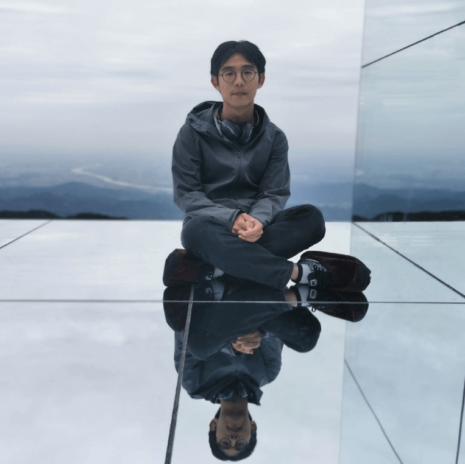
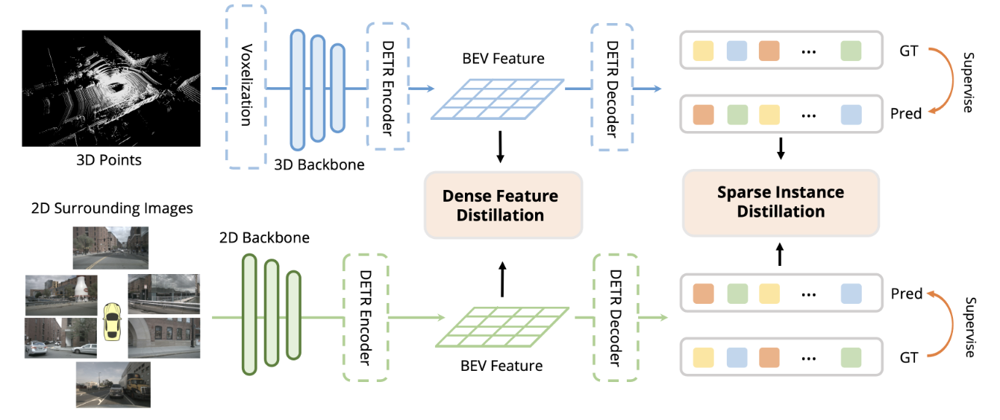
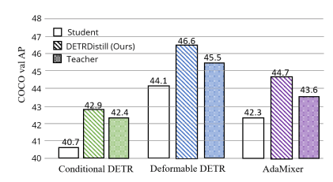

Zehui Chen 陈泽徽PhD CandidateBrain-Inspired Vision Laboratory
|

|
Biography
I am a 3rd-year PhD candidate at University of Science and Technology of China (USTC), advised by Prof. Feng Zhao. I got a B.E. degree at Tongji University in 2020. Currently, I am leading the high-level vision group at USTC-BIVLab.
My research interests include object detection (2D, 3D, or both of them), instance segmentation, and unsupervised learning.
NOTE: Our Lab [Link] is looking forward to having elegant students or researchers join us. Positions for Master’s, Ph.D., and post-doc are opening. If you are interested in our research and want to join us, just contact me via email or WeChat(ID: lovesnowbest)!
Experience
- Sep.2019 - Jul.2020, Perception Research Intern, TuSimple
- Oct.2020 - Mar.2021, Computer Vision Intern, ByteDance
- Mar.2021 - Now, Perception Research Intern, SenseTime
Awards
- National Scholarship. 2022.
- 3rd place at SSLAD 2022 Challenge, 3D Object Detection Track! (ECCV 2022 Workshop)
- 2nd place at Mobile AI 2022 Challenge, Monocular Depth Estimation Track! (ECCV 2022 Workshop)
- National Scholarship. 2021.
- 2nd place at Streaming Detection Challenge, Full Stack Track! (CVPR 2021 Workshop)
- 3rd place at UG2+ Challenge, Low-Light Face Detection Track! (CVPR 2021 Workshop)
- 1st place at 3D FUTURE Challenge, Instance Segmentation Track! (IJCAI 2020 Workshop)
- 1st place at Waymo Open Challenge, 2D Detection Track! (CVPR 2020 Workshop)
Publications
Preprint Papers
 |
Graph-DETR4D: Spatial-Temporal Graph Modeling for Multi-View 3D Object Detection
Zehui Chen, Zheng Chen, Zhenyu Li, Shiquan Zhang, Liangji Fang, Qinhong Jiang, Feng Zhao Under Review [PDF] [Code] |
 |
BEVInst: Improving Geometric Details in BEV Perception with Instance Representation
Weijie Ma, Jingwei Jiang, Yang Yang, Zehui Chen, Hao Chen Under Review [PDF] |
Towards Model Generalization for Monocular 3D Object Detection Zhenyu Li, Zehui Chen, Ang Li, Liangji Fang, Qinhong Jiang, Xianming Liu, Junjun Jiang Arxiv, 2022 [PDF] |
 |
Learning with Noisy Data for Semi-Supervised 3D Object Detection
Zehui Chen, Zhenyu Li, Shuo Wang, Dengpan Fu, Feng Zhao International Conference on Computer Vision (ICCV), 2023 [PDF] [Code] |
| DDOD: Dive Deeper into the Disentanglement of Object Detector
Zehui Chen, Chenhongyi Yang, Jiahao Chang, Feng Zhao, Zheng-Jun Zha, Feng Wu IEEE Transactions on Multimedia (TMM) [PDF] [Code] |
|
|  | BEVDistill: Cross-Modal BEV Distillation for Multi-View 3D Object Detection
Zehui Chen, Zhenyu Li, Shiquan Zhang, Liangji Fang, Qinhong Jiang, Feng Zhao International Conference on Learning Representations (ICLR), 2023 [PDF] [Code] |
 |
Graph-DETR3D: Rethinking Overlapping Regions for Multi-View 3D Object Detection
Zehui Chen, Zhenyu Li, Shiquan Zhang, Liangji Fang, Qinhong Jiang, Feng Zhao ACM International Conference on Multimedia (ACM MM), 2022 [PDF] [Code] |
| AutoAlignV2: Deformable Feature Aggregation for Dynamic Multi-Modal 3D Object Detection
Zehui Chen, Zhenyu Li, Shiquan Zhang, Liangji Fang, Qinhong Jiang, Feng Zhao European Conference on Computer Vision (ECCV), 2022 [PDF] [Code] |
|
 |
AutoAlign: Pixel-Instance Feature Aggregation for Multi-Modal 3D Object Detection
Zehui Chen, Zhenyu Li, Shiquan Zhang, Liangji Fang, Qinhong Jiang, Feng Zhao, Bolei Zhou, Hang Zhao International Joint Conference on Artificial Intelligence (IJCAI), 2022 [PDF] |
 |
Disentangle Your Dense Object Detector
Zehui Chen*, Chenhongyi Yang*, Qiaofei Li, Feng Zhao, Zheng-Jun Zha, Feng Wu ACM International Conference on Multimedia (ACM MM), 2021 [PDF] [Code] |
|  | DETRDistill: A Universal Knowledge Distillation Framework for DETR-families
Jiahao Chang*, Shuo Wang*, Haiming Xu*, Zehui Chen, Chenhongyi Yang, Feng Zhao International Conference on Computer Vision (ICCV), 2023 [PDF] |
| Towards Domain Generalization for Multi-view 3D Object Detection in Bird-Eye-View
Shuo Wang*, Xinhai Zhao*, Haiming Xu, Zehui Chen, Dameng Yu, Jiahao Chang, Zhen Yang, Feng Zhao IEEE Conference on Computer Vision and Pattern Recognition (CVPR), 2023 [PDF] |
|
| SAFE: SIMULTANEOUS ALIGNMENT OF FEATURES AND PREDICTIONS FOR DENSE OBJECT DETECTORS
Xuesong Guo*, Shuo Wang*, Jiahao Chang, Zehui Chen, Feng Zhao IEEE International Conference on Multimedia and Expo (ICME), 2023 [PDF] |
|
| CANDY: CAtegory-kerNelized DYnamic Convolution for Instance Segmentation
Yao Lu, Zhiyi Chen, Zehui Chen, Jie Hu, Liujuan Cao, ShengChuan Zhang International Conference on Acoustics, Speech and Signal Processing (ICASSP), 2023 [PDF] |
|
DepthFormer: Exploiting Long-Range Correlation and Local Information for Accurate Monocular Depth Estimation Zhenyu Li, Zehui Chen, Xianming Liu, Junjun Jiang Machine Intelligence Research, 2023 [PDF] [Code] |
|
LiteDepth: Digging into Fast and Accurate Depth Estimation on Mobile Devices Zhenyu Li, Zehui Chen, Jialei Xu, Xianming Liu, Junjun Jiang European Conference on Computer Vision Workshop (ECCVW), 2022 [PDF] [Code] |
|
| Unsupervised Domain Adaptation for Monocular 3D Object Detection via Self-Training
Zhenyu Li, Zehui Chen, Ang Li, Liangji Fang, Qinhong Jiang, Xianming Liu, Junjun Jiang European Conference on Computer Vision (ECCV), 2022 [PDF] [Code] |
|
 |
SimIPU: Simple 2D Image and 3D Point Cloud Unsupervised Pre-Training for Spatial-Aware Visual Representations
Zhenyu Li, Zehui Chen, Ang Li, Liangji Fang, Qinhong Jiang, Xianming Liu, Junjun Jiang, Bolei Zhou, Hang Zhao AAAI Conference on Artificial Intelligence (AAAI), 2022 [PDF] [Code] |